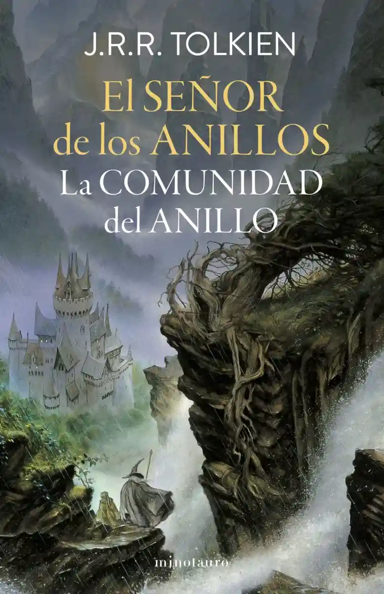

🌟 Libro que estoy leyendo 🌟

📖 Género: Fantasía
👤 Autor: J. R. R. Tolkien
📅 Año de Publicación: 1954
📄 Páginas: 458
🏁 Fecha de inicio de lectura: 13 de marzo de 2025
📊 Progreso: 53% (241/458 páginas leídas)
En la adormecida e idílica Comarca, un joven hobbit recibe un encargo: custodiar el Anillo Único y emprender el viaje para su destrucción en la Grieta del Destino. Acompañado por magos, hombres, elfos y enanos, atravesará la Tierra Media y se internará en las sombras de Mordor, perseguido siempre por las huestes de Sauron, el Señor Oscuro, dispuesto a recuperar su creación para establecer el dominio definitivo del Mal.